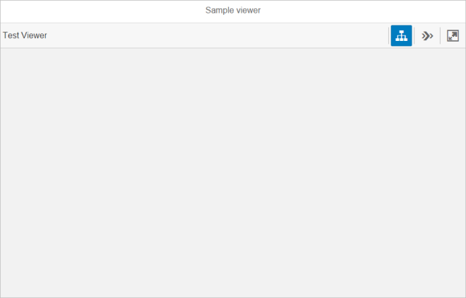
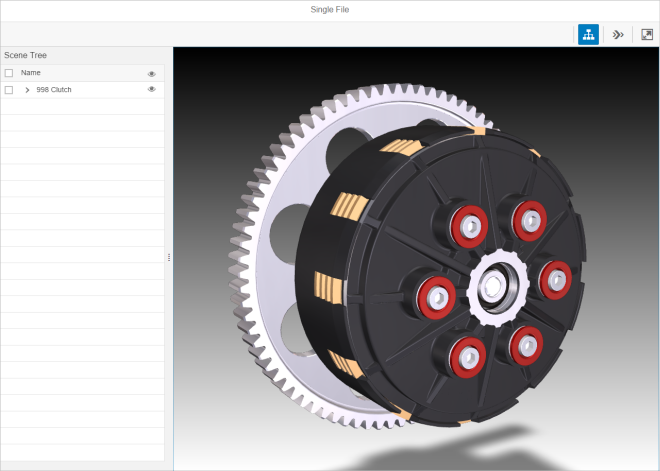

This control is intended to help application developers include simple 3D visualisation capability in their application by connecting, configuring and presenting the essential Visualisation Toolkit controls a single composite control.
The Viewer (sap.ui.vk.Viewer) control is intended to help application developers include simple 3D visualisation capability in their application by connecting, configuring and presenting the essential Visual Interaction toolkit (sap.ui.vk) controls into a single, composite control.
Most applications require the simplest possible visualisation capability, which includes the loading of a single file into the application, and the initialisation of a 3D Viewport. Consumers of such an application also expect to be able to pan, zoom, or rotate (if applicable) the scene, as well as receive visual cues when they select an object in the 3D Viewport. The Viewer control aims to make it as easy as possible for an application developer to include 3D visualisation capability by connecting, configuring and presenting some of the core Visual Interaction toolkit controls into a single, composite control.
Default Layout
The following figure shows the default Viewer layout after it is initialized:
The following figure shows the Viewer layout with a file loaded and all available controls enabled and visible:
Enabling or Disabling Features
'Disabling' the Toolbar will result in no Toolbar being shown in the application.
If the Toolbar feature is enabled, 'disabling' the Scene Tree or Step Navigation feature will result in their respective toolbar buttons being grayed out.